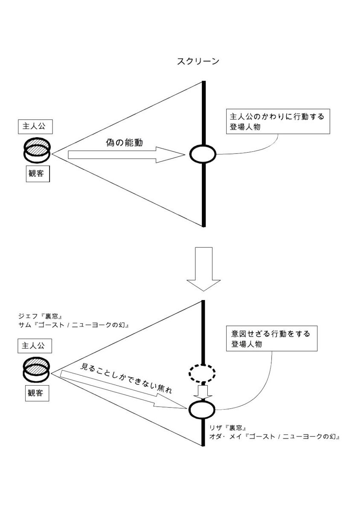

| 「いつのまにか」の描き方: 映画技法の構造分析 | |
| 中澤 正行 | |
| (2015) | |
中澤 正行
本書は「いかにして観客を感情移入させるか」について書かれている。「いつのまにか」なされる感情移入である。それを可能なかぎり具体的に伝えることを旨とした。
そのため参照した映画のいくつかはネタバレしている。いずれも人気のある作品を採り上げたつもりではあるが、未見の読者がいれば、その「いつのまにか」の体験をスポイルしかねない。もちろんそれは本書の意図するところではないので、是非事前に鑑賞しておくことをお勧めする。
特に第11章に出てくる『ユージュアル・サスペクツ』、『シックス・センス』、『スティング』は、見出しの「どんでん返し」にあるとおり核心に触れている。なので第11章に関しては図版のところまで読んで、あとは読み飛ばしてもらってもかまわない。
また、第10章に出てくる『プラダを着た悪魔』に関しては、ラストまでストーリーを概観しているので、鑑賞してからの方が理解はしやすいかと思う。
とはいえ、わかっているのに、知っていてなお、「いつのまにか」感情移入してしまうのが映画であるというのが本書の主張するところなので、多少のネタバレに臆することなく読まれたい。
映画を見るときの物理的な距離は、客席、それ自体は一切の奥行きを欠いたスクリーン、それらの間にある。その現実の距離を超えて、われわれ作り手は観客に虚構の距離／空間を生きさせなければならない。
それゆえ、スクリーンに映し出される虚構の距離、イメージ／サウンドは、あたかもそこに存在するかのようなリアルさが追求される。サイレントからトーキー、モノクロからカラー、スクリーンの大型化、アナログからデジタル、等々。
一方、客席とスクリーンとの間に、頑としてある現実の距離に関しては、映画誕生以来何も変わっていない。照明を落とし劇場を暗くすることで、あたかも存在しないかのように、そこにある空間を無視するという暗黙の了解。
（見せる）虚構の距離の技術革新は、（見せない）現実の距離を圧倒する。しかし、その技術革新が観客の感情移入に資するとは思えない。なぜならクラシックな映画は、新しい映画に比べ感情移入できないとは限らないし、それがたとえ同じ映画であろうが（仮に、カラーで撮影された３Ｄの『七人の侍』〔黒澤明 1954〕があったとして）モノクロよりカラー、２Ｄより３Ｄの方が感情移入を促すとはいえないからだ。
このリアルさの追求が目指すのは、臨場感であって感情移入ではない。そもそも臨場感と感情移入のベクトルは真逆を向いている。
臨場感のベクトルは、リアルな映像と音が物理的な距離を超えて観客の方に向かう。（スクリーンから客席）
感情移入のベクトルは、観客が物理的な距離を超えて映画に没入する。（客席からスクリーン）
「ベクトルが真逆であろうが、どちらも現実の距離を超えて虚構の距離を観客に体感させているではないか（結局、同じことじゃないか）」と言う人がいるかもしれない。
しかし臨場感のベクトルは、逆説的ではあるが、観客に客席を意識させてしまう。物理的な距離は消去できても、そこに客席という不動の視点が残ってしまうからだ。
リアルな映像と音に圧倒され、かえって客席に縛られてしまう観客。物理的な距離を、飛び出す虚像で埋める３Ｄと、虚像定位された音で埋める立体音響システム。それら過度の臨場感には、それゆえブレーキがかけられる。
まず３Ｄは、『アバター』（Avatar, by James Cameron, 2009）以降、それ以前の飛び出す３Ｄから、奥行きを強調する３Ｄへと変化している。
なぜか。
３Ｄは、観客の目とスクリーンの四隅を結んだ「視点ピラミッド」と言われる空間の中にしか収まらない。スクリーンから視点（客席）に近づけば近づくだけ、映せる範囲は狭くなり、やがてそれは点になる。観客との物理的な距離を踏破しようと人物がキャメラに近づいてきても、遅かれ早かれ、どこかでフレームをはみだしてしまい見切れてしまう。
以上のことから、飛び出す３Ｄは石や棒のような面積をもたないもので実現され、それは文字通り頂点を目指し、観客は（スクリーン上の被写体にではなく）客席に釘付けにされる。
客席手前まで迫る過度の臨場感が引き起こすそれは、不気味の谷現象に似ている。「そこではないどこか」を見せるはずの臨場感が、一転「どこでもない客席」を指し示してしまうというアイロニー。これが賢明なジェームス・キャメロンに、その谷に落ちる手前で回れ右をさせ、奥行き感の追求へと向かわせたのではないだろうか。
同じことは立体音響システムについても言える。サラウンドサウンドは、例えば視点（キャメラ）に対しその後方に位置する音源を、同じく視点（客席）の後方に定位、再現できるのにもかかわらず、そうはしない。
具体的に説明しよう。
Ａがいる部屋。Ｂがドアを開け、中のＡに声をかける。
これを、キャメラは部屋の中、ドアを背にしてＡに向け、彼のクロースアップだけでこれを見せると音はどう処理されるか。
ドアの開く音、戸口に立つＢの台詞は、フレームの外、オフの音である。それらの音源は視点（キャメラ）の後方に位置するが、その音と台詞が視点（客席）の後から聞こえてくることは、まずない。もし登場人物の台詞が客席の後ろから聞こえるなら、あなたはきっとその声の方を振り向くはずである。もちろんそこにスクリーンはない。
その音、台詞は、ただ多少の遠近感を伴ってスクリーン方向から曖昧に聞こえてくるだけである。
あたかもその場にいるような（環境音に包まれた）音場は目指されても、その音場のどこに位置するかは特定されない。特定されてはいけない。なぜならそのどこかが特定できるとき、観客は否応なく、そのどこかではない、劇場の客席にいることを意識させられるからだ。
虚像がスクリーンから客席の一点を目指し、音像が劇場の全方位から客席の位置を特定するとき、臨場感のベクトルは客席を立ち上がらせ、照明が落とされているはずの現実の空間を言わば逆照射し、覗き見に淫していた観客は白日のもとにさらされる。
臨場感のベクトルが、いずれ不気味の谷のようなものを超える日が来るのかもしれないが、とりあえずはその手前の頂が、現時点での限界と思われる。1
客席へとむこうからやってくる臨場感とは違って、感情移入は客席から一跨ぎに映画内世界に入り込む。そこで観客は映画内世界を客席に縛られることなく自由に動き回るのである。
では、感情移入のベクトルは何をもって観客を映画内世界に誘うのか、そしてどう映画内世界を生きさせるのか。
フリをすることによって「いつのまにか」われわれは感情移入してしまうのである。
例えば体感型（４Ｄ）と言われる４ＤＸはアトラクションとして楽しむことはできるが、３Ｄ以上の臨場感をえられるというわけではない。体感の客席と、スクリーンから客席へと向かう臨場感の３Ｄは、むしろ乖離している印象を受ける（『アバター』以降の奥行きを強調する３Ｄであればなおさら）。不気味の谷に落ちた典型例ではないだろうか。スクリーン前に設置されたフォグマシーンから出る煙はあろうことかスクリーン上に影を落とし、スクリーンと客席を分断する。観客は臨場感どころか、どこでもない映画館にいることを思い知らされる。 ⏎
映画を演劇から隔てるものに、遍在するキャメラをあげることができる。どちらも客席という視点は不動でありながら、映画にあってはキャメラが観客の視点を媒介することで、擬制的にいかなる視点をもとりうる。キャメラの遍在性それ自体は、取り立ててどうこういうこともなく自然に了承されている類のものである。
しかし権利上どこであろうが遍く存在することのできるキャメラも、スプリット・スクリーンを用いない限り、同時に複数の視点を提示することはできない。至極当然のことながら、キャメラの遍在は可能性／潜在性であり、現実にはカット毎にキャメラはある任意の場所に位置し、その視点からの画を提供するほかない。どこで、何を、どう、撮ってもいいキャメラに、どこかで、何かを、どのようにか、撮らせることが、映画を撮るということ（の一側面）である。
可能性／潜在性であるキャメラの遍在は、ユビキタス社会における監視カメラの（例えば『エネミー・オブ・アメリカ』〔Enemy of the State, by Tony Scott, 1998〕で描かれているような）イメージに近い。
さて、遍在するキャメラ（監視カメラ）が、映画のキャメラの一方の極だとすると、その対極に位置するのが偏在するキャメラである。1
遍在する非人称（遍く存在する神「ユビキタス」の視点）キャメラの「しんにょう」を「人べん」にかえて、人に偏って在るキャメラは人称性を帯びる。その最たるものが、ＰＯＶ／見た目／主観ショットである。
偏在の極、ＰＯＶショットは、観客に登場人物の視点を通し映画内世界を見せることで、その人物への同一化を促すとされている。
潜在的に映画のキャメラは遍在する神の視点なので、登場人物の誰の視点にでも入ることはできるが、たいていそれは観客に感情移入してもらいたい人物、つまり主人公のＰＯＶショットであることが多い。
『フェリスはある朝突然に』（Ferris Bueller's Day Off, by John Hughes, 1986）は、フェリス（マシュー・ブロデリック）の部屋から始まる。病気のフリをしてベッドに横たわるフェリスのもとに、心配する両親と、それが仮病だと知っている妹がやってくる。そのなかでＰＯＶショットが頻出するが、それらはすべてフェリス一人のものである。これだけでこの映画主人公は、父親でもなく、母親でもなく、妹でもない、フェリスその人だと一気に了解できる。
ヒッチコック「（中略）客観というのは舞台のことだからね。つまり演劇だよ。我々というのは、舞台の人物を見ている客だ。我々は彼らと一緒のところにはいない。我々は相手の観点で見ることはない」
だから、あなたはカメラを、見る人間の心の中に置くのですね。
ヒッチコック「そら、若い映画監督はよくこんなことを言うだろう。よし、観客がカメラになるようなシーンを撮ろうじゃないか、とね。これは紋切型の中の最たるものだ。ボブ・モンゴメリーは、「湖中の女」（４７年米）という映画でこの紋切型を実行してみせた。そんなことをする必要はないのに、だ。目的の人物のクロースアップを撮るだけでいいのだ。知っての通り、これはトリックであって、それ以上の何物でもない。クロースアップとその人物の見ているものを撮るだけでいいんだ。彼らと一緒に動いて――好きなように動かしていい――彼らにどんな経験でも――それこそ何でもよい――をさせればいいんだ」
（Ａ・ヒッチコック『ヒッチコック映画自身』）2
「よし、観客がカメラになるようなシーンを撮ろうじゃないか」と主人公のＰＯＶショットだけで撮られた『湖中の女』(Lady in the Lake)は、ジジェクの言うところの密室恐怖症的な感覚を観客に与え、結果として失敗作となった。3
なぜか。
映画内世界を自由に動き回る主人公と違って、観客は客席から逃れることはできないからだ。ＰＯＶショットは、客席からスクリーンまでの物理的な距離を、あたかも主人公が見ている映画内の距離と錯覚させるだけであって、あくまで視点は客席のままである。全編ＰＯＶショットの映画は、観客を客席に座らせたまま映画内世界を引きずりまわすようなものである。
ＰＯＶショットのベクトルは、臨場感のベクトルと同じく客席を指し示す。ＰＯＶショットがもたらす錯覚は、遅かれ早かれ、飛び出す３Ｄのように、目とスクリーンの四隅を結んだ「視点ピラミッド」といわれる空間の閉塞感に取って代わり、観客は否応なく客席を意識させられるのである。
ここで少し「客観」という言葉について触れておきたい。Ｇ・ドゥルーズは次のようにいっている。
客観性の定義とは、「境界なしに、距離なしに見る」ということである。4
厳密な客観性の定義とはこういうことなのだろうが、当然これは矛盾を含む。「境界なしに、距離なしに見る」のは一体誰なのか。厳密な意味での客観が主観から独立してあるべきものだとするなら、この客観の定義それ自体にすでに「見る」という主観の働きが入り込んでいる。そもそも何かを見るためには距離が必要であることからも、このように定義される「客観性」が理念にすぎないことはあきらかである。巷間よく言われるように客観的な視点など存在しない。視点である以上、何らかの主観であることは免れないからだ。
もろもろのフレームのフレームとしてのスクリーンは、共通の尺度をもたないものに共通の尺度を与えるということである。共通の尺度をもたないものとは、たとえば風景のロング・ショットと顔のクロースアップや、〔太陽系などの〕天文学の系と水滴であって、それらは光や凹凸や距離についての共通分母をもたない諸部分である。フレームは、以上のすべての意味において、イメージの脱テリトリー化を保証するものである。
（Ｇ・ドゥルーズ『シネマ１ 運動イメージ』）5
遍在するキャメラは、「共通の尺度をもたないものに共通の尺度」を与える。まさしく「境界なしに、距離なしに見る」キャメラ、厳密な意味での客観である。主観を持たない機械としてのキャメラは「非中枢的な知覚」であり、物事をありのままに記録する。「映画がもたらすイマージュの全体は、観客の知覚とは無関係に、ただそれ自体において存在する」6のである。
しかし、これを見るのは一体誰なのか。
もちろん客席からスクリーンを見る観客である。客観性を厳密に定義するとそれゆえ主観が入り込むように、遍在するキャメラはそれゆえスクリーンを見る観客の主観を意識させてしまう。「距離なしに見る」キャメラは、逆説的ではあるが、スクリーンから、それを見る観客のいる客席までの現実の距離を際立たせてしまうのである。「どこでもないところからの眺め」を眺めているのは、他でもない客席からなのである。
ヒッチコックが言う「客観というのは舞台のこと」とは、この意味で理解しなければならない。
ＰＯＶ（主観）ショット、監視カメラのような客観映像は、それぞれ偏在と遍在の両極に位置しながら、いずれも観客に客席を意識させる。
感情移入、観客に客席（映画を見ていること）を忘れさせるには、ヒッチコックが言うところのトリックが必要でなのである。偏在するキャメラだけでは足りないし、まして遍在するキャメラにおいてはいうに及ばない。映画のキャメラは、偏在と遍在のあいだを行き来して物語を紡いでいくのである。
ＰＯＶショットは、観客に登場人物／主人公の目を通して映画内世界を見させる。主人公から被写体までの映画内の距離と、観客からスクリーンまでの現実の距離を重ねる。いわば、観客に〈主人公のフリ〉をさせるのである。
しかしこれだけでは、やがて観客はそのフリの閉塞感に閉口してしまう。そこで「目的の人物のクロースアップ」、つまりＰＯＶの主である主人公をとらえた客観ショットが必要になる。
ヒッチコックの説明は極めて簡潔であるが、なぜそれが機能するのかには答えてくれない。ＰＯＶショットが観客の感情移入に大いに寄与するのは論を俟たないが、むしろそのオマケでしかないような言われ方の「目的の人物のクロースアップ」にこそ、実はトリックの要諦が隠されているのである（ヒッチコックはこれをサブジェクティブ・トリートメントと呼ぶ1）。
観客に〈主人公のフリ〉をさせるＰＯＶショットに対して、それは主人公に〈観客のフリ〉をさせるのである。
どのようにしてか。
われわれは、空間的、時間的に近いものに、より共感し、それが具体的であればあるほど、共感の度合いも高い。ゆえに観客自身が置かれている環境や経験によっては、主人公に感情移入できたり、できなかったりする。
『きょうのできごと』（行定勲 2004）で妻夫木聡演じる主人公は、映画監督を目指す中沢という男である。私事で恐縮だが、舞台の京都も筆者自身が学生時代を過ごした思い出深い場所である。この主人公に私がどっぷり感情移入したのは言うまでもない。しかし、私が中澤でもなく、映画監督を目指すこともなく、京都で過ごした経験もなければ、同じように共感できただろうか。
日本人だから『父親たちの星条旗』（Flags of Our Fathers, by Clint Eastwood, 2006）の主人公らに、『硫黄島からの手紙』（Letters from Iwo Jima, by Clint Eastwood, 2006）のようには感情移入できないということはないし、たとえ主人公が、殺人鬼だろうが、動物だろうが、宇宙人だろうが、感情移入できるものにはできてしまう。
「観客個人」に似ても似つかない主人公であっても、「観客」のフリさえすれば、感情移入は可能になる。フリといっても、それが具体的でなければ意味がない。すべての観客に共通し、かつ具体的なもの――それはつまり「見ることしかできない」ということである。
主人公の置かれた状況と、観客の個々の事情との近接性が、共感の多寡を左右することに異存はない。しかしターゲットにする観客が多ければ多いほど最大公約数は下がり、つまりステレオタイプにならざるをえなく共感は難しい。そこで観客個人個人の事情ではなく、観客であることの事情にフォーカスすれば、具体的なまま、アクチュアルなまま、すべての個々人にぴたりと当てはめることができる。
すべての観客は、今まさに客席に縛られ、スクリーンを見ることしかできない、ただただ受動的な存在である。主人公をそのような存在にするだけでいい。
『恋しくて』（Some Kind of Wonderful, by Howard Deutch, 1987）の主人公キース（エリック・ストルツ）は、ハイスクールのマドンナ、アマンダ（リー・トンプソン）に恋い焦がれる。そのキースに観客が感情移入するのは、観客がキースのように、学生時代、目立たない存在だったからではなく、キースと同じく、大学進学の学資をアルバイトで稼いでいた過去があるからでもなく、キースのような、そんな経験の一つや二つ、誰にでもあるものだからというわけでもなく、ただキースが高嶺の花であるアマンダを「見ることしかできない」からだ。極論すれば、観客には恋の経験すらいらない。
自らも映画内存在でありながら、その映画内世界で引きこもり、距離を持って見ることしかできない観察者である主人公は、同じくスクリーンを距離を持って見ることしかできない観客の似姿である。そしてその距離は、ＰＯＶショットで共有されている。ＰＯＶショットのＰＯＶが、見ることしかできない主人公の引きこもりに織り込まれる。観客は、鏡（スクリーン）で観客自身を見るように、主人公の見ることしかできない顔を見る。観客はスクリーンに、見ることしかできない主人公を見ることしかできない。つまり、観客はスクリーンに、見ている自分を見ることで、一気にスクリーンの中に織り込まれる。これがヒッチコックの言うサブジェクティブ・トリートメントであり、トリックにすぎないものである。
ヒッチコックの作品の中でも『裏窓』（Rear Window, 1954）は、主人公と観客の類似が多くの論者に言及されている。車椅子での生活を余儀なくされ、おかげで部屋から出ることができず、退屈しのぎに窓から隣人の生活を覗き見るジェフ（ジェームズ・ステュアート）は、まさに映画を見る観客である。しかし、ここまであからさまでなくとも、引きこもり、見ることしかできない主人公であれば、十分機能する。
例えば『ゴースト／ニューヨークの幻』（Ghost, by Jerry Zucker, 1990）での暴漢に殺されゴーストになってしまった主人公サム（パトリック・スウェイジ）。『裏窓』とは異なり、どこにでも自由に行けるが、幽霊であるがゆえに見ることしかできない。
『ロボコップ』（RoboCop, by Paul Verhoeven, 1987）でサイボーグとして蘇生したマーフィー（ピーター・ウェラー）。ロボコップとしてプログラムどおりに動くことしかできず、マーフィー自身はやはり見ることしかできない。
たとえそれが現実的な設定であっても『恋しくて』のスクールカーストのように、主人公を見ることしかできない観察者にすることは、いかようにもできる。
『サニー 永遠の仲間たち』（Sunny, by Kang Hyeong-Cheol, 2011）であれば、平凡な主婦ナミ（ユ・ホジョン）が見ることしかできないのは、高校時代の記憶である。回想もまた主人公を、見ることしか／回想することしかできない観察者に変える。
ここで大切なのは、行動に移せないということ。ひたすら見ることしかできないということ。見たものに対する過剰なリアクションは、行動と変わらない。そこで必要とされるのは「何も表現しない中性のまなざしで見る演技」である。
Ａ・ヒッチコック、『ヒッチコック映画自身』、鈴木圭介訳、筑摩書房、一九九九年、三四四頁 ⏎
川上弘美のエッセイ『ゆっくりさよならをとなえる』に次のような記述がある。
なにしろ小説を書くときには、なるべく直截な説明というものをしたくない。「悲しかったです」と書くかわりに、「空がとても青くて、ジェット機も飛んでいて、私はバナナパフェが食べたかった」などと書いてしまうのが、小説である（たぶん）。1
これに、ヒッチコックの次の言葉を並べる。
それよりも、わたしの気にいらなかったのは、ポール・ニューマンの演技だ。きみも知ってのとおり、ポール・ニューマンはアクターズ・ステュディオ出身の俳優だ。何も表現していない、いわば中性のまなざしが、わたしには、シーンを編集する為に絶対必要だったが、ニューマンはそんな、何も表現しない中性のまなざしで見る演技をいやがった。2
そして川上弘美の「小説」を、ヒッチコックの「映画」にパラフレーズしてみる。
なにしろ映画を撮るときには、なるべく直截な説明というものをしたくない。「アクターズ・ステュディオ方式で、例のごとく顔をちょっとそむけながら、思いいれたっぷりに演技」する代わりに、「何も表現しない中性のまなざしで見る演技」を必要とするのが、映画である（たぶん）。
観客は、主人公の顔を自分の顔として見る。そのときスクリーンは鏡になる。観客が自分の顔を見て物思うとき、それはすでに「鏡の中の私」が物思っているのである。
よく「鏡に映る自分自身は、左右が反対に見える」と言われるが、実際は前後が反転しているだけで左右は反転していない。それでも左右が反対に見えてしまうのは、われわれが鏡像の視点で左右を見ているからだ。「鏡に映る自分を見る私」が物思うときはすでに、「鏡の中の私」が物思っているのである。
ヒッチコックは主人公に、〈観客のフリ〉をさせるのであって、〈キャラクターのフリ〉をさせるのではない。たしかに主人公が〈キャラクターのフリ〉をして「アクターズ・ステュディオ方式で、例のごとく顔をちょっとそむけながら、思いいれたっぷりに演技」をすれば、観客はそのキャラクターに共感するかもしれない。しかし、主人公が映画の中で演じるキャラクターに共感するのは、あくまで客席から見ている私にすぎないのである。距離を介した共感。
主人公が〈観客のフリ〉（「何も表現しない中性のまなざしで見る演技」）をすれば、すでに映画の中まで行った観客が、そこで感じ、考える。距離を介した共感ではなく、距離なしの感情移入。とはいえ実際に観客が感じ、考えるのは、もちろん客席でである。しかしその客席で感じ、考えることは、観客がする〈主人公のフリ〉でもある。
見ることしかできない〈観客のフリ〉を、主人公がする。
感じ、考える〈主人公のフリ〉を、観客がする。
主人公の〈観客のフリ〉（「何も表現しない中性のまなざしで見る演技」）は、観客に〈主人公のフリ〉をして（主人公として）感じ、考える余白を与える。
これがクレショフ効果である。
古代ギリシアの画家、ゼウクシスとパラシオスの逸話が、そのままメソッド演技とクレショフ効果の違いにパラフレーズできる。
あるとき、ゼウクシスとパラシオス、二人の高名な画家が、どちらがより写実的に描けるかを競い合った。ゼウクシスは、ブドウを描いた。小鳥がやってきて、そのブドウを啄んだ。それを見て勝利を確信したゼウクシスは、パラシオスに、画にかかっている覆いを取って作品を見せるように迫った。しかし、実はその覆いそのものがパラシオスによって描かれたものであった。ゼウクシスは、自分のブドウは小鳥を騙しただけだが、パラシオスの覆いは画家である自分の眼をも欺いたと、負けを認めた。
メソッド演技の写実性は、ゼウクシスのブドウである。
「何も表現しない中性のまなざしで見る演技」は、パラシオスの覆いである。
パラシオスの覆いを見るゼウクシスが、すでにその覆いの向こう側にいるように、「何も表現しない中性のまなざしで見る」顔を見る観客は、すでにスクリーンの向こう側にいるのである。
「見ることしかできない」とは、「何も表現しない中性のまなざしで見る」こと。
名優、森繁久彌が勝てないと言ったのは、子供と動物と素人。
最高の映画俳優とは、この上なく上手に何もやらないことのできる人間と言ったのはヒッチコック。3
つまり「見ることしかできない」こと、〈観客のフリ〉ができる人間が、〈キャラクターのフリ〉、写実を超える。
さらに例をあげる。『What would you do?』 というアメリカＡＢＣのテレビ番組がある。俗にいうドッキリ番組ではあるが、他のドッキリでは見られない、見ることしかできない人を見ることができる。
例えば、差別する人、される人を、俳優に演じさせ、その場に居合わせた何も知らない人々が、目の前の差別に声をあげるか否かを、隠しカメラで観察する。
普通、ドッキリというと、ターゲットとなる何も知らない人がいて、その人を騙したり、イタズラして、その反応を楽しむものである。仕掛人のアクション（イタズラ）があり、ターゲットのリアクションがある。視聴者は「自分ならどうリアクションするだろうか」と思いながら、状況に反応して行動するターゲットに、ときに同一化する。このとき、視聴者は〈ターゲットのフリ〉をしている。
一方、『What would you do?』では、アクション（差別）とリアクション（被差別）が、同じく仕掛人である俳優によって演じられ、閉じている。本来であればアクションのターゲットであるはずの居合わせた人々は、そこから締め出され、見ることしかできない。そして、ある人は介入し、ある人は傍観者に留まる。視聴者は「自分ならアクションを起こすだろうか」と思いながら見る。そう思いながら見るとき、視聴者はすでにそこにいるのである。このとき、居合わせた人々は〈視聴者のフリ〉をしている。
視聴者に〈ターゲットのフリ〉を強いる普通のドッキリと異なり、『What would you do?』の視聴者はもはや安全圏から見ることができない。見ることしかできない人、〈視聴者のフリ〉をする人を介して、一気にその状況に置かれるのである。
以上見てきたように、ＰＯＶショットで観客に〈主人公のフリ〉をさせ、「見ることしかできない」ことで主人公に〈観客のフリ〉をさせ、それらのフリを介して一気に観客を映画に織り込むことができる。ＰＯＶショットを見るときの視座は、まだ客席にあるが、見ることしかできない主人公を見るときの視座は、すでに映画内の主人公のそれである（クレショフ効果）
こうして観客は、引きこもり、「見ることしかできない」という受動性を主人公と共有し、十分に感情移入を済ませるのだが、その主人公が動き出したら、〈観客のフリ〉をやめたら、はたしてどうなるのか。
『裏窓』のジェフも、『ゴースト／ニューヨークの幻』のサムも、『ロボコップ』のマーフィーも、『恋しくて』のキースも、『サニー 永遠の仲間たち』のナミも、『What would you do?』の偶然居合わせた人々もすべて、いずれ行動する。
なぜなら、それが観客の偽の能動性を満足させるからだ。
観客は、客席に縛られ、見ることしかできない徹底して受動的な存在でありながら、これを奇貨として主人公に感情移入する。それと同時に主人公のフラストレーションを、自分のものとして引きうけ、主人公として欲望する。よって主人公が行動してはじめて、観客もカタルシスを得ることができるというわけである。
とはいえ、それはあくまで偽の能動性であって、主人公とは違い、（映画が終わらない限り）観客が客席から解放されることはない。映画内に留まるためのアンカー（「見ることしかできない」という視座）を失なった観客は、遅かれ早かれ客席へと戻される。映画内に別のアンカーを下ろさなければ、あとはもう映画を終わらせるほかない。
さてどうすればいいか。
再度『恋しくて』を例に説明する。スクールカーストの底辺である主人公のキースは、その頂点のアマンダを見ることしかできない。この描写が映画の前半で嫌という程繰り返され、観客の感情移入を促す。
見ることしかできなかったキースが、アマンダと彼氏のけんかを目撃し、それに乗じてではあるが、ついにデートを申し込む。彼氏へのあてつけでＯＫするアマンダ。とにもかくにも、これを転轍点としてキースは行動する人になる。
観客はキースというアンカーを失うが、映画はすぐにワッツ（メアリー・スチュアート・マスターソン）という別のアンカーを用意する。彼女はキースに想いを寄せるが、彼とは幼なじみゆえに気づいてもらえない。アマンダにＯＫをもらい有頂天になるキースを、彼女は「見ることしかできない」
転轍点以降、ワッツが〈観客のフリ〉をして、行動するキースのかわりに、観客に映画内での視座を提供するのである。それが証拠に、キースがついにアマンダを誘うそのシーンに、はっきりと視座の引き継ぎを見て取ることができる。
まず観客の視点はキースと共にあり、車の行き交う道路を挟んでむこう側に、彼氏とけんかをするアマンダを見る。キースが思いきって彼女を呼ぶと、道路を横切りキースのもとにやってくるアマンダ。キースがアマンダをデートに誘う。
キャメラはそこから離れて、二人を見つめるワッツにトラックアップしていく。あたかも、これから視点が変わりますよと告げるかのように。
ワッツの見ることしかできない表情に寄り切ると、カットが変わって彼女のＰＯＶショットになり、駐車場に停められた車越しに、歩道に立つキースとアマンダの二人をとらえる。
舞台はちょうど三層になっている。①アマンダと彼氏のいる歩道、②道路を挟んでキースがアマンダと彼氏を見つめる歩道、③その歩道に面した駐車場の奥からキースとアマンダを見つめるワッツが座る車の上。
舞台がアマンダの移動とともに、彼氏のいる歩道から、キースのいる歩道に移る（①→②）と、観客の視座もキースのいる歩道から、ワッツのいる駐車場へと移る（②→③）のである。
観客の視座がキースからワッツに移ったからといって、感情移入する対象まで変わるというわけではない。重要なのは、観客の視座を客席から映画内世界に移すこと、そして映画内に留めておくことである。
別の例『グラン・ブルー』（Le Grand Bleu, by Luc Besson, 1988）をあげる。冒頭15分ほどで、主人公らのバックグラウンドである子供時代がモノクロで描写される。そのなかのジャックの父が潜水中の事故で亡くなるシーン。助けにいこうとする船上のジャックを、おじが制止する。泣き叫ぶジャック。ここで「見ることしかできない」のはジャックである。観客はジャックの視点から、助けることができないという無力感を共有して、死にゆく父親を見る。
しかしこれだけでは、観客が共有しているのはその無力感だけでジャックの哀しみは伝わってこない。もちろんジャックは泣き叫んでいるのだが、その記号的な演技が逆にクレショフ効果を阻害している。
そこで登場するのが、近くの岩場でたまたま釣りをしていて事故を目撃してしまうエンゾである。観客はエンゾの視点から見ることしかできない無力感を共有して、船上で泣き叫ぶジャックを見る。この視座からは、ジャックの視点からは見ることのできなかった彼の哀しみを見ることができる。なぜならジャックの視点から「見ることしかできない」のは、死にゆく父親でしかないが、エンゾの視点から「見ることしかできない」のは、嘆き哀しむジャックだからだ。
このシーンで伝えるべき物語情報は、ジャックが父親を失い嘆き哀しむということだけだから、エンゾは脚本上ここに必要ない。実際、エンゾなしでもこのシーンは成立し得るし、凡庸な監督であればそのように演出したであろう。しかし嘆き哀しむジャックを、客席からではなく、映画の中で見てもらうには、エンゾの視点がどうしても必要なのである。
さらに『ロンゲスト・ヤード』（The Longest Yard, by Robert Aldrich, 1974）から。囚人チームと看守チームの試合のハーフタイム、ポール・クルー（バート・レイノルズ）は、ヘイズン刑務所長（エディ・アルバート）に二十一点差で負けるよう強要され、仲間の安全と引き換えに承知する。わざとミスをし約束どおりの点差が開くのが確実になると、膝を痛めたフリをしてベンチに退くポール。しかしヘイズンは、ポールとの約束を違え、囚人チームを痛めつけるよう命じる。
仲間がやられるのを、ベンチで見ることしかできないポール。観客は見ることしかできない無力感を共有し、フラストレーションを感じる。ヘイズンを殴ったがゆえに未だ出所が許されない老人囚は、ポールにそのことを訊かれ、全く後悔していないと答える。それを聞いたポールは再びフィールドに戻る。ここで観客の偽の能動性は大いに満足させられるが、それと引き換えにポールというアンカーを失うことになる。ここで大団円となるならそれもいいが、ポールはまだこれから仲間からの信用を取り戻さなければならない。
誰からも信頼されないポールは、それでも孤軍奮闘する。観客はそれをヘッドコーチのネイト・スカーボロ（マイケル・コンラッド）の視点から見る。彼はそれゆえプロを引退せざるをえなかった膝の故障を抱え、ベンチから見ることしかできない。ネイトと共に見ることしかできない観客は、なぜポールを助けてやらないのかともどかしくなる。居ても立っても居られず故障をおして立ち上がるネイト。ここでもまた観客の偽の能動性が満たされる。果たしてネイトというアンカーも失った観客であるが、ネイトの加入で再びチームは一丸となり、映画にもう描くべきドラマはなく、あとはスタジアムの観客と同じ視点でチームの勝利を見とどければいい。
『ダイ・ハード』（Die Hard, by John McTiernan, 1988）もまたそうである。テロリストグループによるナカトミビル占拠に偶然居合わせたジョン・マクレーン（ブルース・ウィリス）。彼らの横暴を見ることしかできないことで観客がマクレーンへの感情移入を果たすと、満を持して観客の偽の能動性を満足させるべく反撃に転じる。しかしダイ・ハードな活躍をするマクレーンと違って観客は見ることしかできない。そこで登場するのが黒人警官アル・パウエル（レジナルド・ヴェルジョンソン）である。彼はナカトミビルの外からマクレーンの活躍を見ることしかできない。『ダイ・ハード』の面白さは、マクレーンのアクションをたえず見ることしかできない視点を確保できたところにある。
最後に『What would you do?』。視聴者は最初、見ることしかできない偶然居合わせた人々に感情移入し、What wouldI do?と考えながら事態を見守る。
その人々の一人が意を決して介入し、視聴者の偽の能動性が満たされるのだが、しばらくして事態が膠着することがままある。アンカーを失った視聴者が次に自分のの似姿を見るのが、その様子を隠しカメラでモニターする番組ホストのジョン・キニョネスらスタッフである。もちろん彼らもその行動を見ることしかできない。そしてもう十分といったところで、ジョン・キニョネスがスタッフを従え種明かしに出て行く。ここでもまた視聴者の偽の能動性が満たされるのは言うまでもない。
観客に映画内の視座を提供せずとも、『恋しくて』のキースも、『グランブルー』のジャックも、『ロンゲスト・ヤード』のポールも、『ダイ・ハード』のマクレーンも、主人公であり続けることに変わりない。誰かが観客を映画内に係留できれば、主人公は自由に動くことができる。
再びヒッチコックに接続する。ヒッチコックは自身が「二重の追いかけ」（例えば、警察に追われる主人公が真犯人を追う）にこだわる理由を、観客の同情が追う側より、どちらかといえば追われる側に集まりやすいからだと言う。1
これを、ここまでの考察に引き寄せてみよう。主人公が目的を追わざるをえなくなり動き出すと、観客は映画内の「見ることしかできない」視座を失ってしまう。客席からではなく映画内で「見ることしかできない」視座を維持するために、主人公を追う登場人物の視点に観客の視座を重ねる。
追う側も当然動きはするが、そこには逃げる主人公を「見ることしかできない」という契機がかならずあるはずである。この手の映画は、『逃亡者』（The Fugitive, by Andrew Davis, 1993）や『ミッドナイト・ラン』（Midnight Run, by Martin Brest, 1988）など枚挙にいとまがない。そして前述の『恋しくて』、『グラン・ブルー』、『ロンゲスト・ヤード』もまた広義の「二重の追いかけ」であると言っていいのではないか。
とりわけ『グラン・ブルー』のように何かに魅せられた主人公を描くには、その主人公を見ることしかできない視点抜きには語れない。海に魅せられたジャック（ジャン＝マルク・バール）を、見ることしかできないエンゾ（ジャン・レノ）とジョアンナ（ロザンナ・アークエット）
他に『ガタカ』（Gattaca, by Andrew Niccol, 1997）もその典型例。宇宙に魅せられた主人公ヴィンセント（イーサン・ホーク）を見ることしかできないジェローム（ジュード・ロウ）、アイリーン（ユマ・サーマン）、アントン（ローレン・ディーン）
観客は主人公の視点から、彼が魅せられているものを見ることはできるが、観客が主人公と共有しているのは「見ることしかできない」という一点のみである。同じものを見ることはできるが、同じようには見ることができない。したがって観客が見る以上のものを主人公が見ている、つまり魅せられているということを観客に見せるには、魅せられている主人公を見ることしかできない他の登場人物の視点が必要になるのである。
これはこのまま天才、スーパーヒーローの描写にもパラフレーズできる。観客は、天才やスーパーヒーローが見ているものと同じものを見ることができるが、同じようには見ることができないし、同じようにはもちろん動けない。しかし観客と同じようには見ていない天才やスーパーヒーローを、他の登場人物の視点から見ることはできる。
例えば『ビバリーヒルズ・コップ』（Beverly Hills Cop, by Martin Brest, 1984）。映画はデトロイトからやってきたアクセル（エディ・マーフィー）のスーパーコップぶりを直接描写するのではなく、それを見ることしかできないビバリーヒルズの地元刑事らを通し「二重の追いかけ」として描いている。
Ａ・ヒッチコック、『ヒッチコック映画自身』、鈴木圭介訳、筑摩書房、一九九九年、一五五頁 ⏎
前章で見てきたのは、行動する主人公のかわりに、別の登場人物が「見ることしかできない」ことを引き受ける「二重の追いかけ」であった。次に見るのは「見ることしかできない」主人公のかわりに、別の登場人物が行動するパターンである。
具体例をあげよう。まずは『裏窓』。自室から動けないジェフのかわりに行動するのは、恋人リザ（グレース・ケリー）であり、付添い看護婦のステラ（セルマ・リッター）である。彼女らが行動することで、主人公ジェフは「見ることしかできない」という視座に留まり、観客とその視点を共有し続けることができる。
次に『ゴースト／ニューヨークの幻』。ゴーストとなったサムのかわりに行動するのは、霊媒師のオダ・メイ（ウーピー・ゴールドバーグ）である。彼女が見ることしかできないサムのかわりに行動することで、われわれ観客の偽の能動性が満足させられる。
ここで大事なのは、主人公のかわりに行動する人物の一挙手一投足を、主人公とわれわれがあますことなく見ることしかできずにいることである。主人公のかわりの行動であれ、少しでも主人公の目から離れれば、すなわち観客の映画内の視座も失ってしまうからだ。『裏窓』であれば、ジェフのかわりに行動するリザとステラの顛末が、裏窓を通してジェフにすべて見えてしまうのだし、『ゴースト／ニューヨークの幻』であれば、サムのかわりに行動するオダ・メイの側をサムは片時も離れない。そしてこれらはとてもサスペンスフルなものになる。
どのようにしてか。
見ることしかできない主人公のかわりに行動する登場人物。その行動が、主人公の意図せざる行動になってしまうのである。それを見ることしかできない主人公とわれわれは、思うようにならない展開に手に汗握る。
『裏窓』でいえば、ジェフのかわりに行動するリザが、遺体の一部が埋められているかもしれない花壇を掘り起こすだけでは飽き足らず、犯人と思しき男の部屋に忍び込む。そこに男が戻ってきてしまうのをジェフとわれわれは見ることしかできない。
『ゴースト／ニューヨークの幻』でいえば、それゆえサムが殺されることになった架空口座をサムのかわりにオダ・メイが解約するシーン。自身でも場違いだと認めるオダ・メイの言動が銀行員らに不審を抱かせるのを、サムとわれわれは見ることしかできない。むしろおかしみをさそうシーンだと言っていいが、それでも十分にサスペンスフルである。

ミステリー映画の監督は誰しも、観客に思わず身を乗り出させるほどの興奮を与えたいと思っている。身を乗り出させる元となるものは「サスペンス」と呼ばれている。監督はこれを泣いて欲しがり、脚本家はこれを手に入れる苦しみに泣き、そして役者たちはこれを手中に収めて歓喜に泣くのである。ではいったいサスペンスとは何か、と私はしばしば問われる。
私をして言わせるなら、サスペンスを手に入れるには観客を神の如く〔＝全知〕に振舞わせればよい、ということになる。
（Ａ・ヒッチコック『ヒッチコック映画自身』）1
プレイング・ゴッドという視座、つまり観客に〈神様のフリ〉をさせることでサスペンスを手に入れることができるとヒッチコックは言う。それは一体どのような視座なのか。
先にみた『裏窓』と『ゴースト／ニューヨークの幻』のサスペンスは、主人公のかわりに行動する登場人物の意図せざる逸脱を、主人公とわれわれが「見ることしかできない」ことで得られた。ここではそれを他の登場人物ではなく主人公自身に行動させ、主人公がしてはいけないことをするのを、われわれが「見ることしかできない」ことでサスペンスを得る。このとき観客は〈神様のフリ〉をしているのである。なぜこれが〈神様のフリ〉なのか。
主人公の知りえないこと（してはいけないということ）を知っているからだ。すなわち「全知」
そしてここでもまた大切なのは、神様もまた〈観客のフリ〉をしているということ。ただ沈黙しているだけの神ではない。してはいけないことをする主人公を助けることができるにもかかわらず、そもそも主人公にしてはいけないことなどさせなければいいのにもかかわらず、全能であるにもかかわらず、何もしない。2なぜなら見ることしかできない〈観客のフリ〉をしているからだ。
観客の〈神様のフリ〉＝「全知」だけでは十分ではなく、神様の〈観客のフリ〉＝「見ることしかできない」があってはじめて観客を映画内の視座に留めることができる。
例えば、行動する主人公が「してはいけないことをする」のではなく「するべきことをする」としたらどうなるか。
主人公自身がするべきことを知っている以上、観客だけが知りうることなど何もない（≠「全知」）。それゆえその行動が「見ることしかできない」という焦れ＝サスペンスをもたらすはずもなく、むしろその行動を「見ることができる」ことと、観客自身が「するべきことをする」ことの混同から、観客の偽の能動性が満たされるのである。しかし、その至福もむろん錯覚である以上、長くは続かない。観客は早晩その視座がすでに映画内にはなく客席にあることに気づき、それでもまだ映画が続くようなら徐々にその興味を失っていくだろう。
『トイ・ストーリー３』（Toy Story 3, by Lee Unkrich, 2010）の脚本家マイケル・アーントは「脚本の書き方講座」（『トイ・ストーリー３』特典映像）で次のように言う。第一幕のターニングポイントで主人公は岐路に立たされる。一方の道は健全な責任ある選択、もう一方は不健全で無責任な選択である。もし主人公が正しい道を選んだなら、そこで話は終わってしまう。したがって主人公に不健全で無責任な選択をさせなければならないと。
アーントが言う「健全な責任ある選択」とは、観客の偽の能動性がカタルシスを伴い満足させられる選択である。もう一方の「不健全で無責任な選択」とは、主人公がしてはいけないことをして観客を神の視点に立たせる選択（サスペンス）である。
主人公は少なくとも三回は間違った選択をしなければならない。そして第二幕の終わりになってようやく「正解を得る」ことができ、良い選択をする。この良い選択によって第三幕で主人公は勝利をおさめることができるわけだ。映画構成をシンプルに言い表すとコレに尽きる。
最近のメジャーな映画の中には、主要な間違った選択を二度にして、第三幕の三度目の選択で良い決意を固めるという構成をとっているものもあるけれど、秘数が３であることに変わりはない。それにハリウッドでは必ずストーリーを三つに分けて考え論じるものだということも忘れてはならないだろう。
第一幕＝主人公が間違った選択をする。
第二幕＝主人公が間違った選択をする。
第三幕＝主人公が良い選択をする。
これが秘数３だ。
（ウェンデル・ウェルマン『映画ライターズ・ロードマップ』）3
三幕構成の第一幕（設定）において、主人公と主人公を取り巻く状況がセットアップされ、その目的（問題）が定まる。観客はその状況をともに見ることしかできない主人公に感情移入し、主人公の視点から目的を捉える。そして第二幕（対立）へと橋渡すターニングポイント（プロットポイント）で、主人公は目的の達成のために動き出す。それにより観客の偽の能動性は満たされるが、偽ものである以上、映画内に別のアンカーを下ろさなければ映画を終えるほかない。アーントが言うように主人公が「健全な責任ある選択」をすれば、映画は否応なく終わってしまうのである。だからウェルマンの言うように、第二幕の終わりまでは主人公に「間違った選択」をさせなければならない。
第一幕が、セットアップされた満足できない状況に「見ることしかできない」フラストレーションを主人公と共有する「感情移入のステージ」であれば、第二幕は、主人公のとる「間違った選択」を「見ることしかできない」フラストレーションを神様と共有する「サスペンスのステージ」だと言っていい。どちらも観客を映画内に留めるのは、〈観客のフリ〉をする、つまり「見ることしかできない」、それぞれ主人公と神様である。
マイケル・アーントや、ウェンデル・ウェルマンの言うように、主人公は本当に間違った選択をしなければならないのだろうか。たしかに間違った選択でなければ、観客との緊張関係（サスペンス）は築けない。しかし、あからさまに間違いを犯す主人公に同情できないのもまた事実である。なぜならその主人公は、直前まで観客と同じメタレベルに立ち、観客と同じようにセットアップされた状況（原因と結果の連鎖）に「見ることしかできない」焦れを感じ、のぞむべき結果を得るために目的を定立したのだから、そこから導きだされる手段がありえない間違いでは作為的にすぎる。そもそも間違った手段を携えて行動する主人公に、観客の偽の能動性が満足させられることはない。
原因と結果（状況）の観察、そして目的の定立までは、メタレベルで観客とシェアしているのだから、主人公は観客も納得できる手段で行動すべきである。
ということは主人公に正しい選択をさせるべきなのか。とすれば映画は終わってしまうのではなかったか。
否、やはり二人の言うように、主人公には間違った選択をさせなければならない。ただ、それは結果的に間違いである選択でよく、主人公が行動するそのときには正しいと思われる選択なのである。
正しい目的に対して正しい手段で行動しても、決して目的通りにはならない。なぜなら行動にはかならず副産物が伴うからだ。主人公の行動に伴う副産物（原因）が、主人公のとる手段を間違ったものにする（結果）。観客は、行動する主人公と違って動くことはできない。動けないからこそ、メタレベルからこの新たな原因（副産物）とその結果を観察することができる。逆に主人公は、観客と共有していたその視点を代償とするからこそ、行動できる。おのれの選択が副産物を伴い間違った行動（手段）になることに気づかないから、無責任に行動することができるのである。と、そのように描かれなければならない。
ニール・Ｄ・ヒックスの『ハリウッド脚本術』1によれば、主人公は「外的な目的」と「内的な欲求」に取り組まなければならないと言う。主人公はキッカケとなる事件により「外的な目的」に焦点をしぼり、その「外的な目的」を達成するために行動する。と同時に「気付かぬうちに、主人公は内的な垂直の変化に取り組むことを余儀なくされていく」。その「内的な欲求」は主人公が「外的な目的」に取り組まなければ決して対処することはないものである。また「内的な欲求」に「登場人物は決して気付きはしない。観客が、登場人物のすることに基づいて気づくのである」とも述べられている。
つまり「内的な欲求」とは、主人公が取り組むべき正しい選択であって、メタレベルにいる観客がいつのまにか気づくものである。
観客が気づいてしまえば、オブジェクトレベルの主人公がそれに気づかず「外的な目的」に拘うのが、ある意味間違った選択になり、少なくとも正しい選択「内的な欲求」とのズレが観客の気を揉ませる。
そして「主人公は内的な垂直の変化に取り組」まなければならなくなるのだが、その「内的な垂直の変化」というのは、自身の「内的な欲求」を知るプロセスであり、視点を自己の外に置くこと、つまりメタレベルからの視点を取り戻すことである。ウェンデル・ウェルマンが言う第三幕でやっと主人公が正しい選択をするというのが、このことである。
まとめるとこうだ。
「見ることしかできない」という受動性を共通項として、メタレベルからセットアップされた状況を観察する（因果関係を再構成する）主人公と観客は、やがて「外的な目的」に取り組まざるをえなくなる（目的の定立）。
メタレベルからの視点を犠牲にすることで、（外的な）目的を達成するべくオブジェクトレベルで行動する主人公。主人公と違い、行動できない観客の偽の能動性が満たされる。
その行動に伴う副産物が、主人公が真に取り組むべき「内的な欲求」を指し示す。しかしオブジェクトレベルで「外的な目的」に拘う主人公には気づくことができない。「内的な欲求」には直接関係がない「外的な目的」に拘う主人公を、観客は見ることしかできないのである。
第三幕までに「気付かぬうちに、主人公は内的な垂直の変化に取り組むことを余儀なくされていく」。そして第三幕に至り「内的な欲求」に気づいた主人公は、再び観客と同じメタレベルから、正しい選択をするべく再びオブジェクトレベルに下りていく。観客の偽の能動性を十二分に満足させ映画は終わる。
ニール・Ｄ・ヒックス、『ハリウッド脚本術』、濱口幸一訳、フィルムアート社、二〇〇一年、二七―三三頁 ⏎
Ｈ いま、わたしたちがこうやって話しあっているテーブルの下に時限爆弾が仕掛けられていたとしよう。しかし、観客もわたしたちもそのことを知らない。わたしたちはなんでもない会話をかわしている。と、突然、ドカーンと爆弾が爆発する。観客は不意をつかれてびっくりする。これがサプライズ（不意打ち＝びっくり仕掛け）だ。サプライズのまえには、なんのおもしろみもない平凡なシーンが描かれるだけだ。では、サスペンスが生まれるシチュエーションはどんなものか。観客はまずテーブルの下に爆弾がアナーキストかだれかに仕掛けられたことを知っている。〔......〕これだけの設定でまえと同じようにつまらないふたりの会話がたちまち生きてくる。なぜなら、観客が完全にこのシーンに参加してしまうからだ。スクリーンのなかの人物たちに向かって、「そんなばかな話をのんびりしているときじゃないぞ！テーブルの下には爆弾が仕掛けられているんだぞ！もうすぐ爆発するぞ！」と言ってやりたくなるからだ。最初の場合は、爆発とともにわずか十五秒間のサプライズを観客にあたえるだけだが、あとの場合は十五分間のサスペンスを観客にもたらすことになるわけだ。
（ヒッチコック／トリュフォー『定本 映画術』）1
ガス・ヴァン・サントの作品群に死の三部作と呼ばれるものがある。『ジェリー』（Gerry, by Gus Van Sant, 2002）、『エレファント』（Elephant, by Gus Van Sant, 2003）、『ラストデイズ』（Last Days, by Gus Van Sant, 2005）。どれも実際の事件に着想を得、極力ストーリー性を排し、彷徨う登場人物を執拗にキャメラが追う。ここまで本書が解説してきたような映画とは、ベクトルを異にする作品である。もちろんラスト近く唐突に訪れるそれぞれの死も決して説明されることはない。安易な感情移入を拒むその語り口は、見るものに感情移入なしでスクリーンを見続けるリテラシーを要求し、結果、多くの観客は脱落することになる。しかし、前言を翻すようだが『エレファント』だけは、それを免れているように思われるのである。2なぜか。
世間の耳目を集めたコロンバイン高校銃乱射事件を題材にした『エレファント』。カールズバッド洞窟群国立公園で二人が迷子になり一人が死亡したというローカルな事件を基にした『ジェリー』。その『ジェリー』とは異なり、『エレファント』の観客の誰もが、映画を見る前から、二人の生徒が銃を乱射し多数の死傷者を出すことを知っているのである。つまりそれがヒッチコックが言うところの「テーブルの下の爆弾」になる。映画は、ラスト近くの惨劇に至るまで、他の一日となんら変わりない日常を淡々と描いていく。われわれ観客は「そんなばかな話をのんびりしているときじゃないぞ！テーブルの下には爆弾が仕掛けられているんだぞ！もうすぐ爆発するぞ！」とまでは思わないにしても、これから彼らを待ち受けるものに思いを馳せず見ることはできない。
「それなら『ラストデイズ』の観客もまた、それがカート・コバーンの自殺前二日間を描いた映画だと見る前から知っているではないか」と言う人がいるかもしれない。しかしその「テーブルの下の爆弾」を仕掛けたのは、カート・コバーンその人なのである。それゆえ観客は待ち受ける死までの距離を否応なしに計るのではなく、どのようにして／なぜその死に至るかに思いを馳せる。とはいえ、そこで描かれるのは『ジェリー』や『エレファント』と変わらない劇的な描写を排した散策なのだ。つまり同じ散策も、『ジェリー』や『ラストデイズ』では死（サプライズ）に至るまでの「なんのおもしろみもない平凡なシーン」にすぎないが、『エレファント』ではサスペンスになる。単純化にすぎるとのそしりは免れないが、これが三部作のなかで『エレファント』が突出して支持される一つの要因であることは間違いないだろうし、少なくとも、ガス・ヴァン・サントが意図したかどうかとは別に、サスペンスという形式が観客を参加させずにはいられないという証左であると言っていい。
中条 ミステリー映画といえば、サスペンス映画とはどう違うのかという問題が出てきますね。ジル・ドゥルーズの本を読んでいたら、ミステリーとサスペンスの定義をすごくうまく言っているところがありました。映画についてではなく、短篇小説についてですが。短篇小説には二種類あって、一種類はこれから何が起こるかを描く小説。それに対して、もう一つの短篇小説のあり方は、これまでに何が起こったかを描く小説。この定義の一つめをサスペンス、二つめをミステリーだとすれば、ミステリー映画というのは、何が起こったか、つまり、犯人は誰だったか、動機は何だったか、何を使って殺したかが問題になる。対するサスペンス映画は、これから何が起こるのかというハラハラ、ドキドキに主眼をおいている。ミステリー色の強いものは、謎解きが主眼になってくるし、サスペンス色が強いものは、一方で人間の不安とか、もう一方で冒険のスリルなんかを描けるんじゃないかと思います。
（中条省平他「鼎談 ミステリー映画の３０本」）3
ミステリーでの観客の視座は、スクリーンを「物理的な距離を隔てて」見る客席にある。いわば（フレームから離れて見る）「窓越しの見物」である。
一方、サスペンスでの観客の視座は、主人公を「距離なしに見る」ことしかできない神様の視点にある。いわば（フレームに密着して見る）「覗き」である。
「距離なしに見る」とは第二章でふれた客観性の定義である。「共通の尺度をもたないものに共通の尺度」を与えるスクリーンに、非中枢的な知覚であるキャメラがもたらす「イマージュの全体は、観客の知覚とは無関係に、ただそれ自体において存在する」まさに「客観」である。しかしそのスクリーンを誰が「距離なしに見る」のかと問うた瞬間に、スクリーンと客席の距離が立ち上がってしまうのであった。
客席とはまぎれもなく観客が映画を見る視点（立脚点）である。映画の作り手は、観客にスクリーンを見ていること、客席を忘れさせなければならない。換言すれば「誰が見ているのか」と問わせてはいけない。視点を客席の外に置かせてはいけない。客席を１と数えさせてはいけないのである。
観客の視点は客席のまま「これまでに何が起こったか」という問いを投げかけることで、「誰が見ているのか」という問いを封じているのがミステリーである。ヒッチコックは「謎解きはある種の好奇心を強く誘発するが、そこにはエモーションが欠けている」という。4要するにミステリーは「一種の知的なパズル・ゲーム」であり、観客は窓越しの客席から、安楽椅子探偵よろしく「これまでに何が起こったか」の謎を知るために、アクションとリアクションで紡がれるストーリーを能動的に見る。しかしそれが能動である以上、観客はいつでもそれをやめることができるのである。
一方「誰が見ているのか」と問われれば、神様だと答えるのがサスペンスである。観客が占める神様の視座が、それ自体は距離を持たない二次元のスクリーンの中にある以上、距離なしに見ているのである。もちろんこれはトリックであって「誰がその神様を見ているのか」と問えば、すぐさま客席が立ち上がる。しかし映画の中に「見ることしかできない」という観客の視点を、神の視点として入れ子状に配置することで（厳密な客観性を求め無限後退に陥らない限り）観客の視点が客席の外に置かれることはない。しかも、このプレイング・ゴッドという視座はイメージされるような高みの見物ではなく、すぐ脇で見る、いわば傍目八目のようなものである。英語でいうbackseat driverとは違って、言いたくても何も言えず、かといってその場から離れることもできない。空間的には近接して（距離なしに見て）時間的には八目先まで見通す視座である。なぜならこのメタレベルからの眼差しは、オブジェクトレベルで観客だけに知らされた事実を経由することなしには、主人公を見ることができないからだ。観客に知らされた正しい選択と、主人公の間違った選択との疎隔（オブジェクトレベルでの距離）を、メタレベルから見ることしかできない。見ることしかできないからこそ、見ることだけはやめられない(距離なしに見る）。
『エレファント』が「こののち誰もが死ぬかもしれない」というサスペンスであることはすでに述べた。その『エレファント』にインスパイアされたという『明日、君がいない』（2:37, by Murali K. Thalluri, 2006）は「こののち誰かが死ぬ」というミステリーに牽引されて描かれる。午後2時37分。オーストラリア南部の高校で誰かが自殺を図る。典型的なフーダニット（Who done it?）である。「これまでに何が起こったか」つまり「自殺したのは誰なのか」という問いを投げかけることで、「誰が見ているのか」という問いを封じているのである。
その伝でいけば『ラストデイズ』は「なぜ自殺したのか」のワイダニット（Why done it?）であるといえるが、その問いに誘発される観客の好奇心は長続きせず「誰が見ているのか」という問いにすり替わり、「観客が見ている」という身もふたもない答えに多くの観客は白けてしまうのだった。
では『明日、君がいない』をミステリーたらしめているものは一体何なのか。
「これまでに何が起こったか」の知的なパズル・ゲームであるミステリーは、起ったこと、つまり結末の意外性（サプライズ）を必要とする。その結末を意外なものとするため、わざと偽の手がかりが提示される。それが燻製にしん（ミスディレクション）と呼ばれるものである。ヒッチコックは次のように言う。
観客というものは、映画を見ながら、いつも映画そのものより一歩先んじて、「そうか、もうこれからどうなるかわかったぞ！」と思いたがるものだ。この観客心理をわきまえたうえで観客をうまく完璧に誘導してやらなければならない。
（ヒッチコック／トリュフォー『定本 映画術』）5
第六章で述べたように「サスペンスを手に入れるには観客を神の如く〔＝全知〕に振舞わせればよい」のであった。とするなら「そうか、もうこれからどうなるかわかったぞ！」とは、結果それが間違いであったとしても全知（Let them play God）に他ならない。つまり燻製にしんとは、サプライズを活かすためのサスペンスの導入なのである。
『明日、君がいない』の「誰が自殺したのか」というフーダニットのミステリーには、いかにも自殺しそうな、してもおかしくない（が、しない）複数の登場人物が、燻製にしんとして描かれている。これが自殺しそうにもない人物が自殺したという意外な結末（サプライズ）を際立たせる。6『ラストデイズ』の「なぜ自殺したのか」というワイダニットが「誰が見ているか」の問いを封じることができなかったのは、この燻製にしんが与えられなかったからだ。
ミステリーによって「ある種の好奇心を強く誘発」し、燻製にしんによって「十五分間のサスペンス」とエモーションをもたらし、意外な結末によって「十五秒間のサプライズ」を与えることができる。ミステリーもサスペンスもサプライズもお互いに排他することはないのである。
ヒッチコック／トリュフォー、『定本 映画術』、山田宏一他訳、晶文社、一九九〇年、六〇―六一頁 ⏎
実際、興行収入も他二作から突出し、ガス・ヴァン・サントは同作で第56回カンヌ国際映画祭のパルム・ドールと監督賞を同時受賞している。 ⏎
中条省平、筒井武文、藤崎康、「鼎談 ミステリー映画の３０本」、『小説トリッパー』、一九九七年夏季号、一四頁 ⏎
ヒッチコック／トリュフォー、前掲書、六〇頁 ⏎
同書、二八〇頁 ⏎
この自殺しそうにもない人物とは、劇中で最も描かれなかった人物であり、したがってアンフェアと言われてもおかしくはない。しかし、この描かれない（顧みられない）ことそれ自体が自殺の理由に反転するのだから、このように語る他ないのだし、それゆえ見事なのだ。仮に、周りから顧みられないこの人物を丁寧に描いたとしよう。今度はこの描写のフェアネスが、逆に描写内容を裏切ることになる。 ⏎
主人公はまず「見ることしかできない」ことで〈観客のフリ〉をする。が、ほどなく第一幕のターニング・ポイントで主人公は行動せざるをえなくなる。〈観客のフリ〉、つまり「見ることしかできない」ことを止めて、行動しなければならない。
しかし、その行動がフリでしかないとすればどうか。
主人公は行動するためオブジェクトレベルに下りるが、フリをすることで軸足をメタレベルに残すことができる。行動はするが本気ではない。フリでしかないから自身の行動を冷笑的に観察もする。それがフリだと知っているのは、大概、当の主人公と観客だけである。同じ視点に立つ観客と主人公は共犯関係であり、観客は主人公と一緒にフリをして騙しているかのような感覚を味わう。軸足がメタレベルにある以上、偽の能動性が一回かぎりで蕩尽されることはない。「見ることしかできない」という視点を代償とすることなく行動できるのである。
例えば、リンジー・ローハン。彼女の代表作といえば『ファミリー・ゲーム／双子の天使』（The Parent Trap, by Nancy Meyers, 1998）、『フォーチュン・クッキー』（Freaky Friday, by Mark Waters, 2003）、『ミーン・ガールズ』（Mean Girls, by Mark Waters, 2004）で決まりだろう。
『ファミリー・ゲーム／双子の天使』では、リンジー・ローハンが双子のアニーとハリーの二役を演じる。二人が幼い頃両親が離婚し、アニーはイギリスで母に、ハリーはアメリカで父に、お互いの存在を知らされないままに育てられる。偶然に出会った二人はその事実を知り、アニーは〈ハリーのフリ〉をして父のもとに、ハリーは〈アニーのフリ〉をして母のもとに戻り、両親を復縁させようと画策する。
『フォーチュン・クッキー』では、リンジー・ローハン演じる娘とその母親が中華料理店でフォーチュン・クッキーをもらうと、なぜか翌日二人の体が入れ替わってしまう。元通りになるまで、娘は母親の体で〈母親のフリ〉を、母親は娘の体で〈娘のフリ〉をしなければならなくなる。
『ミーン・ガールズ』。両親が動物学者でアフリカ育ちのケイディ（リンジー・ローハン）が、十六歳にしてはじめてアメリカの公立高校に通うことになる。ケイディはレズのジャニスとゲイのダミアンと友達になるが、ひょんなことからスクールカーストの最上位に君臨するプラスティックスに気に入られてしまう。ジャニスはこれ幸いにプラスティックスをスパイしろとケイディに命じる。不本意ながらも承知しプラスティクスのメンバーとして、そのフリをするケイディ。
『ファミリー・ゲーム／双子の天使』と『フォーチュン・クッキー』は「入れ替わりもの」と言っていい。決してコメディに限ったことではなく『インファナル・アフェア』1（警察からマフィアへ潜入し〈警官のフリ〉をするヤンと、マフィアから警察に潜入し〈マフィアのフリ〉をするラウ）や、『フェイス／オフ』2（お互いの顔が入れ替わり〈ＦＢＩ捜査官のフリ〉をするテロリストと、〈テロリストのフリ〉をするＦＢＩ捜査官）などもある。
「入れ替わり」ではなく「成り代わり」となると『デーヴ』3（影武者として〈大統領のフリ〉をするそっくりさんのデーヴ）や、『好きと言えなくて』4（自分の容姿に自信の持てないアビーが、好きな人に嫌われたくなくて、容姿端麗な友人ノエルに〈アビーのフリ〉をさせる）や、『ガタカ』（「不適正者」であるヴィンセントが、宇宙飛行士になるために「適正者」である〈ジェロームのフリ〉をする）などがある。
登場人物同士が〈お互いのフリ〉をする「入れ替わりもの」。主に主人公が〈ある登場人物のフリ〉をする「成り代わりもの」。他に、主に主人公が〈架空の人物のフリ〉をするパターンもある。これらすべて登場人物が〈自分自身ではない誰かのフリ〉をする。
フリをするのが「自分自身ではない誰か」ではなくて、「本来の自分自身ではない自分」になると『ミーン・ガールズ』になる。例えば他に『ショック集団』5（精神病院で起きた殺人事件の真相を暴くため、新聞記者のジョニーは〈患者のフリ〉をして入院する）や、『花とアリス』6（花は、想いをよせる先輩が気絶したのをいいことに、自分が先輩の今カノで、それを先輩が思い出せないのは記憶喪失になったからだと信じ込ませる。花は〈今カノのフリ〉をし、花の友人、アリスに〈元カノのフリ〉をさせる）など枚挙に暇がない。
フリが好調なときは偽の能動性が満足させられ、不調に陥るとバレはしないかとハラハラさせられる。軸足がメタレベルにある行動であるから、観客は常にその緊張関係に介入することになる。
主人公が観客とともにメタレベルにあるときは、出来事を見ることしかできない。しかし、その因果関係から目的を導きだすと、積極的にせよ（『ファミリー・ゲーム／双子の天使』）、消極的にせよ（「『フォーチュン・クッキー』、『ミーン・ガールズ』）、目的達成のためオブジェクトレベルに下り、その手段としてフリをする。
ここで導きだされた手段はそれなりに納得のいくもの、正しいと思われる選択でないと、観客は離れていってしまうし、観客の偽の能動性も満足させられない。とはいえ、行動する主人公が間違った選択をしなければ映画は終わってしまう。フリを間違った選択にしなければならない。
その理想的な展開が、フリが「いつのまにか」本当になることである。『ミーン・ガールズ』と『ショック集団』がまさにそれで、前者では〈ミーンガールズであるプラスティックスのメンバーのフリ〉をしていたはずのケイディが、「いつのまにか」ミーンガールそのものになってしまい、後者では〈精神病者のフリ〉をしていたはずのジョニーが、「いつのまにか」精神を病んでしまう。
フリをするというのは、メタレベルから見れば他人を騙しているのであるが、オブジェクトレベルから見ると自分を騙していることに他ならない。
フリが本当になるというのは、メタレベルに残しておいたはずの軸足が「いつのまにか」オブジェクトレベルに移ってしまっているということ。他人を騙しているつもりが「いつのまにか」自分を騙している。ここで重要なのは「いつのまにか」
では、この「いつのまにか」は一体どのように表現すればいいのか。
サスペンスと同じく、観客にだけ先に知らせればいい。そしてそれに遅れて主人公に気づかせる。このズレが「いつの間にか」の間となるのである。
「いつのまにか」とは、気づかないうちにある出来事や状態が変化していたことを表す。それは、つねに、すでに、変化が完了してしまってから遡行して得られる感慨である。
そうして振り返られる「いつの間にか」の間は、主人公の気づき（変化の完了）と、先行する観客の気づき（変化の開始）とのズレを指す。変化するものはといえば、フリである。フリが本当になる。
どのようにして気づかないうちに本当になるのか。
フリをしつつもメタレベルに残していたはずの軸足が「いつしか」オブジェクトレベルに移りはじめ、主人公はメタレベルとオブジェクトレベルに引き裂かれることになる。つまり主人公は観客同様フリが本当になる顛倒に半ば気づいているのだが、それに気づいていないフリをするのである。しかしメタレベルの主人公が、ただフリをしているだけだと強弁しても、フリが「いつのまにか」本当になってしまったオブジェクトレベルの主人公を、もはやコントロールすることはできない。第七章でふれた主人公が取り組まなければならない「内的な垂直の変化」とは、このことである。
そして、これがサスペンスとの違いである。サスペンスには主人公の気づきがなく、主人公はメタレベルにない。それゆえ垂直に引き裂かれることもなく、オブジェクトレベルで間違った選択に突き進む。サスペンスで引き裂かれるのは観客のみであって、気づく気配のない主人公を観客は見ることしかできない。1まさにヒッチコックのいう「テーブルの下の爆弾」である。主人公はテーブルの下の爆弾に気づくことなく、観客の心配をよそにおしゃべりに興じ続ける。
「いつのまにか」に重要なのは、主人公の変化を観客と主人公自身にそれぞれどのように気づかせるかである。まず観客にだけその変化の開始を、どのようにか提示する。2それに遅れて主人公にその変化の完了を、どのようにか受け入れさせる。そのように描かれなければならない。
具体例として『プラダを着た悪魔』（The Devil Wears Prada, by David Frankel, 2006）をあげよう。この映画で描かれる「いつのまにか」は、主人公アンディ（アン・ハサウェイ）が、ああはなりたくないと思っていたはずの彼女のボス、ミランダ（メリル・ストリープ）のように「いつのまにか」なってしまったことに気づくそれである。
ジャーナリスト志望でファッションに興味がないながらも、そこをミランダに気に入られ、彼女のアシスタントとして一流ファッション誌で働くことになるアンディ。腰掛け程度にしか考えていない彼女は面従腹背でやり過ごそうとするが、ミランダはそう甘くない。アンディが二本のベルトが同じにしか見えないと笑うと、ミランダはアンディが馬鹿にするファッションに伏流するものを言い含める。
ミランダの前では平身低頭だったアンディだが、アパートに帰るとボーイフレンド相手に馬鹿馬鹿しいと愚痴をこぼす。それでも同僚のナイジェル（スタンリー・トゥッチ）に助けられながら、「いつしか」ファッションに目覚めていく。ミランダに認められたアンディは、先輩のエミリー（エミリー・ブラント）が心待ちにしていたパリへの同行を彼女に代わり命ぜられる。エミリーには申し訳ないが仕方がないことだと自分に言い聞かせるアンディ。
「知らず知らずのうちに」変わっていく彼女を、ボーイフレンドはアンディ自身が馬鹿にしていた人々と同じだと指摘する。それを聞いて馬鹿馬鹿しいと一蹴するアンディ。喧嘩別れしてパリへと向かったアンディがそこで見たのは、離婚が決まって意気消沈しているミランダの姿。その直後、アンディは自分の姿を鏡で見る。フラッシュバックされるかつての垢抜けないアンディ。かつての姿とは対照的に「いつのまにか」ナイジェルなしでもセンスがよくなっているアンディ。
パリでのコレクションを終えて、アンディはミランダに「あなたは私に似てる」と言われる。ミランダのようにナイジェルを犠牲にしてまで生き残ることはできないと否定するアンディ。すでにエミリーを犠牲にしてきたではないかと指摘され「いつのまにか」変わってしまっていたことに気づかされる。
さて、まず観客の気づきはどこで訪れるか。
確実にそうだと言えるのは、ボーイフレンドの指摘（いつのまにかアンディ自身が馬鹿にしていたミランダの取り巻きのようになってしまっている）をアンディが一蹴するシーンだろう。馬鹿馬鹿しいと全く取り合わないその態度は、アンディがファッションに取り憑かれた人々を一蹴したそれと重なる。自分が全否定したものに「いつのまにか」自分がなってしまったことを、同じように全否定するアンディ。3フリが本当になったのにもかかわらず、フリをしているだけだと強弁する。メタレベルにあったはずの軸足が完全に離れたとわかる瞬間である。
次に、主人公アンディの気づきはどのようにして訪れるか。
「目で目は見えぬ」とことわざにもあるように、人は他人のことはよく見えても、自分のこととなるとよく見えないものである。人が何かを見るには距離が必要で、距離なしで見ることはできない。だから鏡があるのだし、『ヤンヤン 夏の想い出』（Yi Yi: A One and a Two, by Edward Yang, 2000）のヤンヤンは「自分では見えないだろうから見せてあげる」と他人の背中の写真ばかりを撮るのだ。
そう、自分自身を見るのにも距離／疎隔が必要なのである。
まずアンディは、離婚が決まって意気消沈しているミランダの姿に、恋人と喧嘩別れした自分を見る。ミランダのようにはなりたくないはずで、ただフリをしているだけのはずのアンディがそこに自分の姿を見てしまう。
無意識ではこのことに気づいている。それが証拠に、続くシーンで彼女は現在の自分を鏡で見、かつての自分をフラッシュバックするのである。ただ、まだ受け入れるには至らない。ここから気づきの完了までの過程は、エリザベス・キューブラー＝ロスの唱える死の受容のプロセスに似ているかもしれない。4とにかく主人公アンディは、メタレベルとオブジェクトレベルに引き裂かれる。
引き裂かれたままラスト、自身の鏡像であるミランダから「あなたは私に似てる」つまり、私はあなた自身だと告げられる。ミランダのように他人を犠牲にするようなことはしないと否定するアンディ。気づいていないようだから言うが、そういうあなたもすでに他人を犠牲にしてきたではないか、と指摘するアンディの鏡像。ここに至りようやくフリが本当になっていたことを受け入れることができたアンディは、ミランダの元を去る。受容できてはじめて、それを捨てることができるのである。
「いつの間にか」の間は、①観客の気づきを主人公のそれに先行させ、②主人公が受容するまでのプロセス（引き裂かれてある状況）をある意味サスペンスフルに見せ、③そして主人公は受容の証拠として、自分の似姿に、かつてはできなかったことを今度はすることによって、表現される。
復讐のために家政婦／ベビーシッターを装い相手の家に潜入するという映画を二つあげる。『ひき逃げ』（成瀬巳喜男, 1966）と『ゆりかごを揺らす手』（The Hand That Rocks the Cradle, by Curtis Hanson, 1992）。
『ひき逃げ』の主人公、国子（高峰秀子）は自分の息子をひき逃げした絹子(司葉子)の家に家政婦として潜り込むが、絹子の息子に情がうつってしまい、復讐の遂行との間で引き裂かれる。
一方『ゆりかごを揺らす手』で引き裂かれるのは観客のみである。高峰秀子とは違ってペイトン（レベッカ・デモーネイ）に迷いはない。ということは主人公になりえない。『ゆりかごを揺らす手』の主人公はクレア（アナベラ・シオラ）を中心とした家族であり、われわれ観客はペイトンの奸計に気づかないクレアらをただ見ることしかできず、そのサスペンスに引き裂かれるのである。 ⏎
第七章でふれたように、「内的な欲求」は、登場人物には決して気づかれず、観客が登場人物のすることに基づいて、彼に先行して気づくのだった。 ⏎
『グッド・ウィル・ハンティング／旅立ち』（Good Will Hunting, by Gus Van Sant, 1997）にも同じ構造がある。ウィル・ハンティング（マット・デイモン）の親友チャッキー（ベン・アフレック）が、ハーバードの学生のフリをしてナンパをする。そのはったりを見破ったハーバードの学生が自らの教養をひけらかしチャッキーをやりこめる。それが受け売り（フリ）にすぎないと見抜いたウィルは、逆にその学生を論破し鼻を折る。観客の溜飲を下げるシーンであるが、その後、当のウィルが「いつのまにか」自分が全否定したハーバードの学生のようにふるまってしまうのである。それをセラピストのショーン（ロビン・ウィリアムズ）に、経験の伴わない知識をふりかざしているにすぎないと看破される。そしてショーンもまた、ウィルに他人との付き合い方の哲学を自分が教え諭したつもりで、それがそのままショーンにも当てはまることを逆に指摘される。メタレベルにいると信じて疑わないものが、「いつのまにか」オブジェクトレベルに引きずり下ろされ、またそれが繰り返される入れ子構造のオチが素晴らしい。結局ウィルに気づきを与え、正しい選択をさせるのは、無知な友人と思われていたチャッキーの言葉なのだ。 ⏎
「否認」「怒り」「取引」「抑うつ」「受容」の五段階に分類されている。 ⏎
「いつのまにか」なされる変化も、映画である以上見せなければならない。見せられているはずの変化であるにもかかわらず、「いつしか」はじまり、「知らず知らずのうちに」進行し、「いつのまにか」終わっている変化である。もちろん前章での「いつのまにか」は主人公のそれであって、観客の「いつのまにか」という感慨ではない。
しかし、本当にそうだろうか。
「いつのまにか」という描写が映画にとって重要なのは、それが映画を見るということに類比的だからだ。観客もまた、映画（フィクション）にすぎないと知りながら、フィクションを信じるフリをして映画を見る。が、映画が終わって気づくのは「いつのまにか」没入していた、つまり「いつのまにか」フィクションを信じるフリが本当になっていたということである。
観客は、フリが本当になってしまっていることに気づかないオブジェクトレベルの主人公を、メタレベルから見ることしかできずにもどかしく思う。しかし、そもそも観客がメタレベルだと思っているその視点が、すでに客席ではなく、映画というフィクションの中、オブジェクトレベルにあるのはここまで見てきた通りである。ミイラとりが「いつのまにか」ミイラになるとでも言えばいいか。1
主人公への感情移入が、観客の〈主人公のフリ〉から始まったことを思い出してほしい。われわれ観客は、客席というメタレベルからの視点を代償に、あるいは「本気ではない、あくまでもフリなのだ、たかが映画じゃないか」と軸足は客席に残しながらも、映画というオブジェクトレベルに下りていったのである。たとえ軸足を残していようと「いつのまにか」フリは本当になり、客席は忘れられてしまう。映画というオブジェクトレベルの変化を、メタレベルである客席から観察しているだけと信じて疑わない観客が、映画が終わって初めて映画という変化がすでに完了していて、観客自身がその変化の一部であったことに気づく「いつのまにか」の体験が映画を見るということなのだ。
外から見ているはずの主体が「いつしか」自己を勘定に入れてしまい（フリをする）、「知らず知らずのうちに」自分を１と数える外からの視点を失ってしまう（フリが本当になる）。視点を自己の外に置くことで、自身の垂直の顛倒に遡行して気づき「いつのまにか」と感じ入るのが映画である。
さて「どんでん返し」である。主人公の「いつのまにか」が、主人公の気づきに先行して観客に気づきを与える、言わばサスペンスの手法だとすれば、観客に先行する気づきを与えず主人公／登場人物とともに気づかせる「どんでん返し」は、サプライズの手法だと言える。ヒッチコックの言うように、サプライズは一瞬の効果でサスペンスと違って持続しない。アーントの言うように、正しい道を選んだなら／気づいたなら、そこで映画は終わってしまう。と、当然のことながら「どんでん返し」はラストに訪れる。
そしてこのサプライズ（どんでん返し）は、観客が映画の終了後、遡行して気づく垂直の顛倒、「いつのまにか」の体験を、映画が終わらないうちに前倒ししたものである。つまり「いつのまにか映画に引き込まれていた」という観賞後の感慨のかわりに「いつのまにか騙されていた」とまだ映画を見ているうちに、観客に思わせるのである。
「どんでん返し」といえば、かならず名前のあがる作品に『ユージュアル・サスペクツ』（The Usual Suspects, by Bryan Singer, 1995）がある。第八章で述べたように、ミステリーで意外な結末（サプライズ）を用意するには、燻製にしんが必要だった。「そうか、もうこれからどうなるかわかったぞ！」という観客の気づきは、何も知らない主人公に焦れるサスペンスを生むだけでなく、それが偽の手がかりである以上、本来の結末を意外なものにする。
『ユージュアル・サスペクツ』の燻製にしんは、「キートン（ガブリエル・バーン）がカイザー・ソゼに違いない、ヴァーバル・キント（ケヴィン・スペイシー）はキートンに騙されている」というデヴィット・クイヤン捜査官（チャズ・パルミンテリ）と観客の思い込みである。しかし明かされた真相は、ただ意外なだけでなく「どんでん返し」とまで言われる。なぜか。
燻製にしんによって観客の注意が逸らされていたものが、ただ同じオブジェクトレベルにある別の真相ではなく、メタレベルとオブジェクトレベルの垂直の顛倒であるからだ。われわれ観客はメタレベルにあって、語り手であるキントを次のように見る。キント自身が語りそのものによって騙られている。つまりキートンによって、そのように語るであろうことをコントロールされている。そのうえそのことに気づくことができない哀れな存在だと。
キントに対して"I am smarter than you"というクイヤンと同じく、観客もまた燻製にしんによって「そうか、もうこれからどうなるかわかったぞ！」と、本来、語り手である以上、語る話（オブジェクトレベル）から時間的にも空間的にも隔たって（メタレベル）あるはずのキントを、オブジェクトレベルに放逐する。
しかしキントの語る話で騙られていたのは、キント自身ではなく、クイヤンとわれわれ観客であったことがわかる。キントはわれわれの「そうか、もうこれからどうなるかわかったぞ！」という賢しら、つまりメタレベルにあることそれ自体を利用して、われわれを顛倒したのである。
他の例でも見てみよう。『シックス・センス』（The Sixth Sense, 1999）言わずと知れたＭ・ナイト・シャマランの代表作である。小児精神科医のマルコム（ブルース・ウィリス）は、死者が見えてしまうという少年コール（ハーレイ・ジョエル・オスメント）を見ることしかできない。見ることしかできないことで引きこもり「そうか、もうこれからどうなるかわかったぞ！」と、死者が訴えることに耳を傾ければ彼らはもう出てこないはずだとコールにアドバイスする。
見ることしかできないという無力感の表明が「いつのまにか」見ることができるという賢しらに変わり、メタレベルからオブジェクトレベルを画定するのである。ここに逆説が成立する。見ることができるという賢しらは、それゆえ見ることができない。
コール「死んだ人が見える〔......〕彼らはお互いには見えない......見たいものだけが見える......死んだとは思っていない」
マルコム「よく出てくるかい」
コール「しょっちゅう......彼らはどこにでもいる」
死んだ人とはマルコムであり、すなわちわれわれ観客である。
「彼らは（観客は）お互いには見えない」映画を見ているときに、他の観客を見る人はいない。
「（観客は）見たいものだけが見える」つまり見たいものしか見ない。これは「そうか、もうこれからどうなるかわかったぞ！」という賢しらへの固着に他ならない。
「死んだ（観客は観客だ）とは思っていない」観客は「いつのまにか」映画に没入していて、客席に座る観客であることを忘れている。
「彼らは（観客は）どこにでもいる」映画とは観客のために上映されるものであるから、客席から離れない限り、シーンがどこで展開されようが観客はそこにいる。
そして大前提であるコールの「死んだ人が見える」とは、コールには観客が見えるということ。つまり（観客に）見られていることを知りながら〈見られていないフリ〉（演技）をしているだけだと告白しているのである。『シックス・センス』が名作たるゆえんは、映画を見ること、そのことを描いているからだ。映画を見ることの前倒しとしての「どんでん返し」
もう一例『スティング』（The Sting, by George Roy Hill, 1973）はどうか。観客は、フッカー（ロバート・レッドフォード）とゴンドルフ（ポール・ニューマン）が、ロネガン（ロバート・ショウ）をカモにするその手際を、彼らの側から見せられる。観客は見ることしかできないながらも、それゆえ騙す側からすべて見ることができるのだと「いつしか」錯覚させられる。だからフッカーがＦＢＩから脅されゴンドルフを裏切り陥れようとするのも、観客は騙さざるをえないフッカー側から見ているのだと信じて疑わない。しかし、それもまたゴンドルフとフッカーの計略の一部だったと気づかされるのである。観客は「いつのまにか」騙されていた。
この鮮やかさは、オブジェクトレベルのロネガンが騙されるその騙され方と構造的に同じやり方で騙されることからくる。鏡にうつっているのが自分だと気づかない人物を客観的に見ていたつもりが、その光景自体が鏡にうつった自分自身だったと気づくようなものである。
列車の中でのポーカーで、ロネガンは、ゴンドーフから片時も目を離さない。酔っぱらったフリをして勝ち続けるゴンドーフは、ロネガンや周囲の視線に無防備である。ロネガンは自分の仕掛けるイカサマをゴンドーフに見られていないかを見る。
ロネガンにとって、見る側に立つことは優位に立つことである。だから、強迫的にゴンドーフを見続け、自らのイカサマは決して見られないよう監視する。彼にとって、見られることなく見ることが力の隠喩なのである。2
脚本のデイヴィッド・Ｓ・ウォードは、メイキングのインタビューで次のように言っている。
詐欺師の魅力は無法者でいながら道義的である点だ。暴力を使わないし、盗みもしない。カモ自身の欲を逆手に取る。無意識のうちに、目的は金儲けだが結果的に地位ある人々の偽善や欲深さをさらけ出すことになる
ロネガン自身の欲とは、見られることなく見ることでゴンドーフを支配することである。そしてそれは見事に逆手に取られる。なぜなら、ロネガンが（見られることなく）見ることは、ゴンドーフが（見ることなく）見られることに、すでに織り込まれているからだ。
このロネガンとゴンドーフの関係に類比的なのが、観客と映画の関係である。観客が（見られることなく）見ることができるという賢しらは、映画が見られることに、すでに織り込まれている。つまり我輩もまたカモである。
『二〇〇一年宇宙の旅』（2001: A Space Odyssey, by Stanley Kubrick, 1968）のラスト、ボーマン船長（キア・デュリア）はホテルのような一室で年老いていきその一生を終える。それをキューブリックはどのように描いているか。
ボーマンのＰＯＶショットに年老いたボーマンを捉え、「いつのまにか」ＰＯＶショットの主であるはずの若いボーマンはいなくなり、「いつのまにか」年老いたボーマンその人になっているのである。そして年老いたボーマンのＰＯＶショットに捉えられた、さらに年老いたボーマンに「いつのまにか」なるのである。見る主体が、見ている客体にすぎないものに「いつのまにか」変化してしまう。しかも見ている客体は、すでに変化し終わった主体なのだ。
観客は、ここでのボーマンのように映画を見、「いつのまにか」映画の中で一生を終え、スターチャイルドとなって映画館を後にするのである。 ⏎
見られることなく見るパワーゲームを描いたのは『プレデター』（Predator, by John McTiernan, 1987） ⏎
要はいかにして映画内に、客席に代わる視点を用意できるかである。それはまず（登場人物の視点で見てみるという）フリであってかまわない。フリでしかなかったものが「いつのまにか」本当になればいい、つまり客席から見ていることを忘れさせられればいいのだから。その「いつのまにか」の体験が映画を見るということである。
観客に〈主人公のフリ〉をさせるために見せなければならないのは、見ることしかできないという〈観客のフリ〉をする主人公であり、観客が「いつのまにか」客席を忘れるために見せなければならないのは、「いつのまにか」フリでしかなかった行動が本当になってしまう主人公である。
「見ることしかできない」という無力感の表明は、それゆえにすべてを俯瞰できる視点を手にすることができる。しかしそれは「見ることができる」という不遜に容易に反転し、それゆえすべてを俯瞰できる視点を「いつのまにか」失う。
われわれは見ることができる。しかし見ることしかできないことで見える光景を忘れている。それに気づかせてくれるのが映画を見るという体験ではないだろうか。
周吉「......欲張ったらきりがない。諦めにゃあならん、そうわしは思うたんじゃ〔......〕まぁええとおもわにゃならんだろ」
沼田「そうじゃのう。今時の若いもんの中には平気で親殺す奴もおるんじゃから、それにくらべりゃなんぼかマシな方か」
これは『東京物語』（小津安二郎 1953）で主人公の平山周吉（笠智衆）が昔馴染みの沼田（東野英治郎）と飲みながら交わすやりとりである。
次に後半、周吉と、とみ（東山千栄子）が尾道へ帰る途中、とみの具合が悪くなり大阪で下車し訪ねた息子の一人、敬三（大坂志郎）の下宿での会話。
周吉「欲言やぁきりがないが、まぁええ方じゃよ」
とみ「ええ方ですとも、よっぽどええ方でさぁ、私ら幸せでさぁ」
周吉「そうじゃのう、まぁ幸せな方じゃのう」
とみ「そうでさぁ、幸せな方でさぁ」
どちらのシーンも言っていることは同じである。どちらも引きこもってある視点である。しかし、前者がそう「見ることができる」と言い聞かせているのに対し、後者はそう「見ることしかできない」という「いつのまにか」の気づきなのである。視点を自己の外に置いてはじめて見える光景、しかし、すでに見ていたはずの光景。
ながながと賢し立って書き連ねてきたが、結局同じことしか言っていない。しかも、ここまでの論旨と整合しない映画は山のようにある。そのような映画は例外としてとりあえず棚上げしてきたつもりが、いつのまにか見ないようにしてきただけなのだと気づく。気づいた以上アーントの言うように、これで話は終わりである。欲を言えばきりがないが、まぁいい方か。